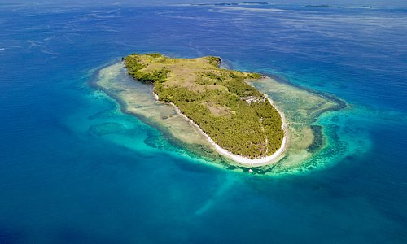
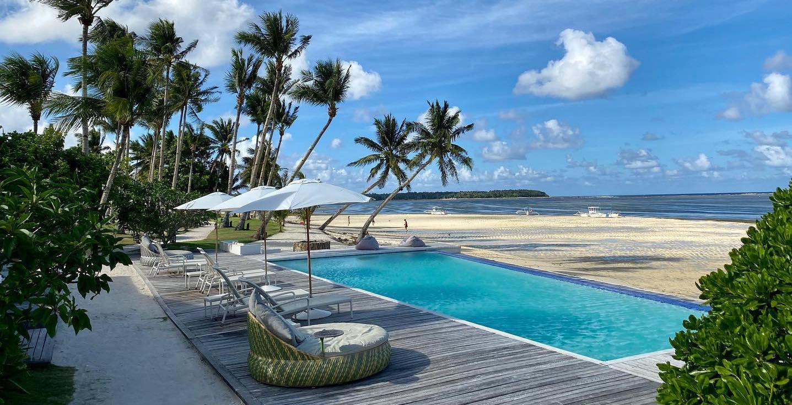
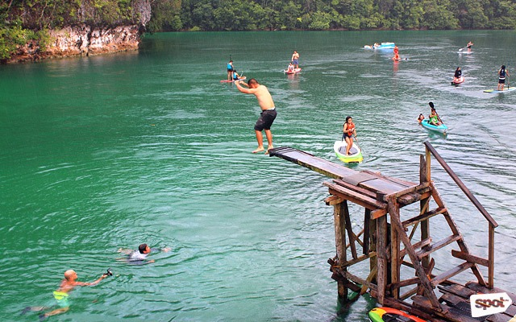

The Adventure You Want
Book with us now and see the available schedules. See you there!
SIARGAO ISLAND: The Purest Island Ever
It is an island complete will all the adventures you ask for. Even though this place is known for surfing, there are a lot of caves and hiking expeditions that are held on the island to cater to tourists: may it be locals or foreigners. The view is breath-taking and it has the perfect aquamarine-colored ocean ever! This place is the place of paradise!
Relaxation at it's Finest
The cottages and accommodations around the island are satisfying and high-quality. You can definitely feel the vacation vibes that the island gives off as you walk the white sand beach, chilling on a pool, or just having a siesta on a 'duyan' or a locally-made hammock by the sea.
Only the Best Experiences
The island not only offers surfing but a whole lot more adventures that everyone will surely enjoy. There's a hiking trip to the island and you can explore the place more while kayaking. A diving spot like in the picture will dare you to show off your cool moves. A floating cottage is also available for those who loves to swim in the middle of the sea. Experienced guides will make sure your stay will be worth every minute and instructors are there to teach you depending on what you and your companions need may it be a tutorial on the basics of surfing, how to move while kayaking, or remind about safety precautions around the island.